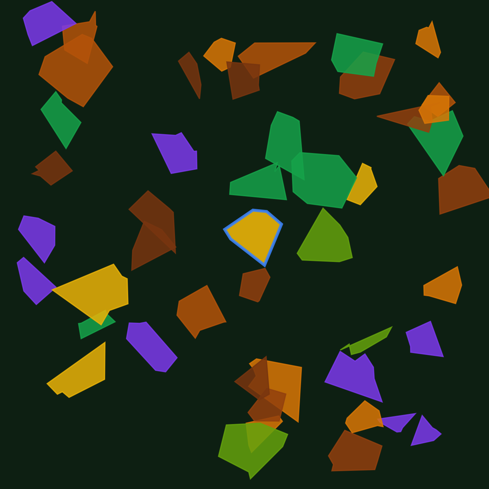

Cube Earth helps agricultural organisations understand what's growing, monitor crop development, and prioritise field inspections across Ireland using satellite imagery and AI.
Monitor every mapped tillage parcel in Ireland from a single interface.

No sensors, no farm visits, no manual surveys — just publicly available European satellite data, analysed at parcel level.
Every 5 days, ESA's Sentinel-2 satellites capture optical imagery of every field in Ireland. We track vegetation indices (NDVI, NDRE, NDII) across the full growing season.
A model trained on 4 years of historical growth patterns estimates the most likely crop type from its seasonal growth pattern — how it greens up, peaks, and senesces.
We compare our crop predictions with LPIS declarations, highlight differences for review, estimate growth stage, and provide harvest timing insights — all within an interactive parcel map.
Click any parcel to see a full breakdown — not just a crop label.
Spring/Winter Barley, Wheat, Oats, Maize, Rye — accompanied by a calibrated confidence score, not a black-box guess.
Every parcel compares satellite detection against the farmer's LPIS declaration, flagging disagreements for review.
From germination to harvest, estimate where a crop sits in its growth cycle right now.
Season-long vegetation index history for every field, updated as new satellite passes arrive.
Estimated harvest window based on crop type and seasonal development.
7-day rainfall, temperature and wind forecasts overlaid on every field, in context.
Every mapped LPIS parcel is analysed individually using Sentinel-2 imagery — not county or regional averages.
Analyse over 61,000 mapped tillage parcels across Ireland, not a sample region.
Built entirely on freely available Sentinel-2 satellite imagery — nothing to install.
Every prediction includes a calibrated confidence score — no black-box outputs.
Explore parcel histories, growth stages, and weather in one place.
Designed to monitor thousands of fields simultaneously, not one at a time.
Government schemes check whether a required action happened. Cube Earth asks a different question: does the satellite evidence support the declared crop? Across all 61,866 parcels we've analysed, satellite detection disagrees with the LPIS declaration for a meaningful share of fields, some at high confidence.
This matters for grain buyers verifying supplier claims, for insurers assessing risk, and for anyone who needs independent, field-level evidence that can help prioritize inspections.
Every prediction includes a calibrated confidence score. We'd rather tell you what we don't know than hide it. High-confidence predictions are more reliable than low-confidence predictions and should be interpreted accordingly.
Cube Earth provides decision-support information and should not be used as the sole basis for regulatory or contractual decisions without additional verification.
Monitor client fields at scale between site visits.
Verify supplier crop declarations before harvest, without relying on self-reporting alone.
Independent evidence to support underwriting and claims review.
Cross-check declared land use as part of loan and subsidy risk assessment.
Monitor thousands of parcels from a single map, prioritising where to look first.
Independent, field-level data to complement existing compliance systems.
71.7% balanced accuracy nationally, rising to 73–75% in our core Carlow/Kilkenny reference region, measured on held-out data not used in training. Confidence scores are calibrated so the displayed percentage reflects real-world reliability.
Currently we classify 8 tillage crop types (Barley, Wheat, Oats, Maize, Rye — Spring and Winter varieties). Grassland and other land uses are not yet covered. Spring cereals are harder to distinguish from one another than from Maize.
Sentinel-2 revisits every ~5 days under ideal conditions; actual usable imagery depends on cloud cover. We reprocess as new clear imagery becomes available rather than on a fixed schedule.
A difference can mean the declaration doesn't match what's growing, or that our prediction is wrong — it's evidence to prompt review, not a verdict. Higher-confidence differences are more likely to reflect a genuine discrepancy.
Cube Earth is currently in early access. Pricing is being finalised — get in touch to discuss what fits your organisation.
Free map access and parcel lookup across all of Ireland's mapped tillage parcels.
Available now
Organisation dashboards, saved regions, exports, and ongoing monitoring for your specific parcels of interest.
Contact for access
API access, bulk parcel analysis, and custom integrations for buyers, insurers, and large organisations.
Contact for access
Agricultural organisations often rely on declarations, manual inspections, or fragmented datasets to understand what's happening across thousands of fields. We built Cube Earth to provide an independent, parcel-level view using open satellite imagery, transparent machine learning, and confidence scores that make uncertainty visible instead of hiding it.
Questions about accuracy, coverage, or organisation-level access — reach out directly.
saumitra@cubed-earth.com →Free to use. No account required to browse the map.